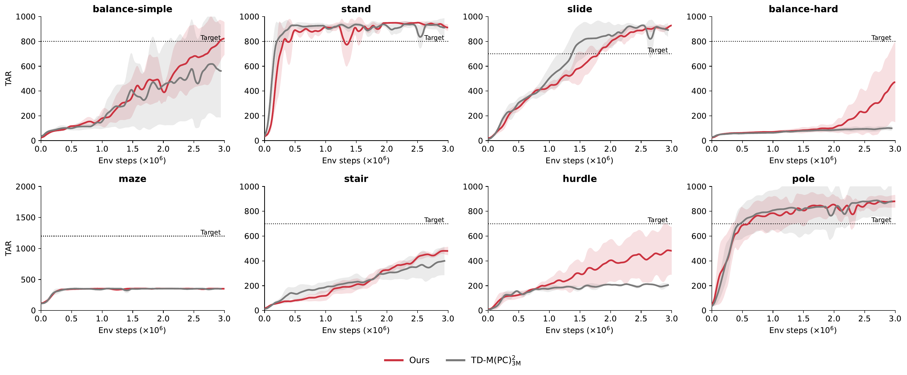
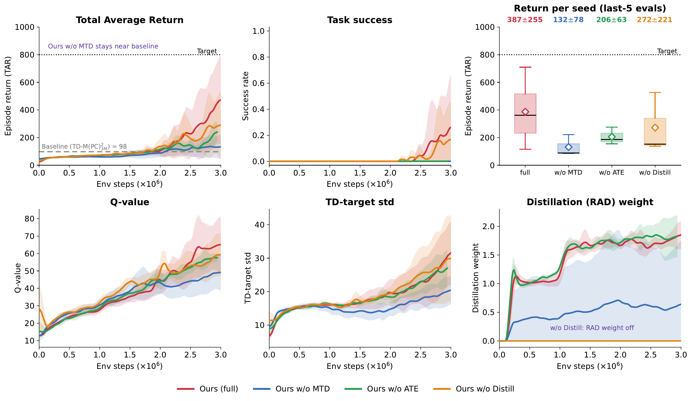
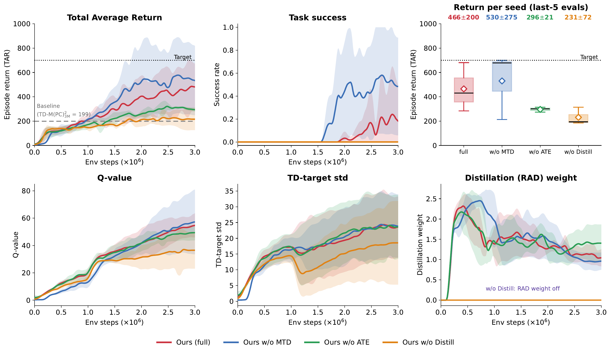
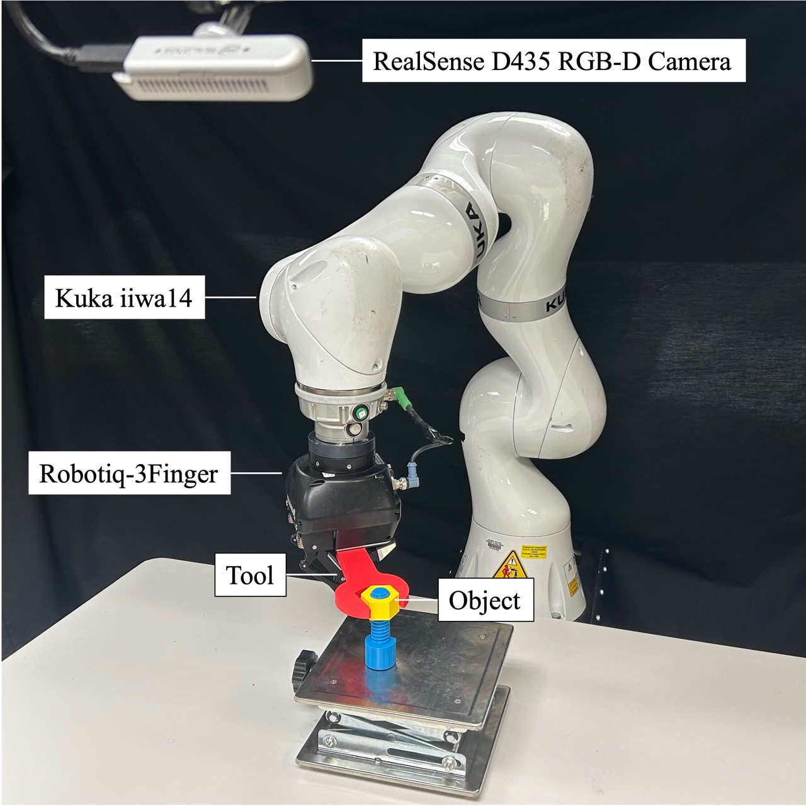

Links are anonymized for double-blind review.
Trained in simulation. Deployed zero‑shot on hardware.
Wrench‑into‑nut insertion on a 7‑DoF Kuka iiwa14, trained only in simulation and run zero‑shot. Our policy completes the insertion across wrench sizes, including unseen ones; the policy‑constrained TD‑M(PC)2 baseline times out on the harder trials.
Same controller, reward, and training as in simulation, with no real‑world fine‑tuning. Wrench size 5 matches the simulation training distribution; sizes 3 and 1 are unseen and probe generalization. Size 1 is the hardest; in the clip shown both methods complete the insertion, but see the per‑size success rates in the full results below.
Each pair is our method beside the vanilla TD‑M(PC)2 baseline on a random size‑5 scene: green = inserted, red = timed out. Ours inserts on all five; the baseline times out on three. Full simulation & hardware numbers →
balance_hard return over thePlanning with learned predictive models has become a leading paradigm for high‑dimensional robot control. TD‑MPC couples Temporal‑Difference Q‑learning with Model‑Predictive Control: a learned world model enables short‑horizon MPPI planning, while a learned critic supplies value estimates for both actor improvement and planner evaluation. This makes critic learning central to the TD‑MPC loop. However, the critic is trained on planner‑collected transitions but bootstraps through actions predicted by the learned actor, allowing value learning to inherit actor‑dependent errors. At the same time, high‑return behaviors discovered by planning are transferred back to the actor only indirectly through the learned critic.
We address these coupled bottlenecks with three changes to TD‑M(PC)2, a policy‑constrained TD‑MPC variant. First, multi‑step TD targets shift credit from terminal bootstraps toward realized rewards. Second, uncertainty‑aware terminal values downweight the bootstrap whenever the Q‑ensemble disagrees. Third, return‑weighted actor distillation transfers successful planner‑generated behavior directly into the actor. Together, these components preserve the standard TD‑MPC training and planning loop while improving long‑horizon credit assignment, limiting the planner's reliance on unreliable terminal values, and directly reusing high‑return planning experience. Empirical results on HumanoidBench locomotion show consistent improvements over the strongest published baselines on challenging tasks. We additionally evaluate on DMControl, and a real‑world tool‑use task, finding that performance is preserved: the improvements do not trade off against standard benchmark robustness.
Keywords: Model‑Based RL · Humanoid Control · Uncertainty‑Aware Planning
In policy‑constrained TD‑MPC, the critic both trains the actor and supplies the planner's terminal value. Two coupled failure modes propagate through this loop.
The TD target evaluates future value at the actor's predicted action (not the action the planner executed), so actor errors enter the value target and, through the critic, the planner's terminal.
Rare high‑return planner trajectories reach the actor only after propagating into Q‑values, which is slow in long‑horizon tasks where useful reward signals are delayed or sparse relative to the bootstrap.
Each adapts a known idea to a distinct subsystem of the TD‑MPC loop. The encoder, latent dynamics, reward model, Q‑ensemble, and MPPI sampling are otherwise unchanged.
critic training
An n‑step target (n=3) reads realized rewards from replay, delaying and scaling the actor‑evaluated bootstrap by γn. The target leans on rewards observed under planner‑executed behavior rather than the actor's predicted bootstrap.
planner scoring
The MPPI terminal value is penalized by Q‑ensemble disagreement, with an adaptive coefficient (λmax=0.5). When heads agree the baseline is recovered; when they disagree, trajectories relying on an unreliable terminal bootstrap are discouraged.
actor learning
A return‑weighted maximum‑likelihood term gives the actor a direct supervised signal from high‑return planner episodes, shaping the policy before its value has fully propagated through the critic.
A coarse reward‑structure taxonomy of the evaluated tasks. The mechanism is designed for survival‑gated control, where the planner can discover high‑return behavior that better TD targets and actor distillation then amplify. Sparse or heavily‑staged tasks may need exploration or hierarchy beyond our changes, even where TAR improves.
stability/survival × task progress
walk run stand crawl hurdle stair slide pole balance‑hard balance‑simple
several shaped components; easy subgoals give partial return
sit‑simple sit‑hard door bookshelf‑simple bookshelf‑hard window
distance penalty or sparse success bonus; long‑horizon navigation
maze truck
stability/progress combined with object‑specific shaped rewards
basketball
Grouping describes the dominant failure mode relevant to our method, not a formal benchmark property. (Appendix: HumanoidBench task taxonomy.)
Total Average Return (TAR), mean±std over seeds, each seed scored by its final‑five‑evaluation mean. Our method is reported at 3M environment steps. Click a column header to sort.
Bars show mean±std TAR per method; the dashed line is the official HumanoidBench success threshold.
| Task | DreamerV3 | TD‑MPC2 | BMPC | BOOM | TD‑M(PC)2 | Ours | Target |
|---|
Bold = best, underline = second best. * plot‑digitized TD‑M(PC)2;
‡ average over only the subset of tasks a method reports. n/a = not reported.
Every task, every method: mean over seeds with ±1 std bands. Ours in red; TD‑M(PC)2 is the dotted plot‑digitized line. Hover a panel for values; switch suites below.
Our method is reported at 3M steps while published baselines use their original budgets (2M for TD‑MPC2 / BMPC / BOOM). To rule out “the extra 1M steps did it,” we re‑ran vanilla TD‑M(PC)2 at the same ≤3M budget (base3M) on eight representative locomotion tasks, under our exact protocol.
balance‑hard +289 · balance‑simple +166stand −24 · stair −92 · maze −8| Task | Published TD‑M(PC)2* | base3M | Ours (3M) | Δ Ours−base3M | Δ base3M−Pub. | Target |
|---|
Mean±std over n=3 seeds, each scored by its final‑five‑evaluation TAR at ≤3M.
*plot‑digitized from the original 2M TD‑M(PC)2 curves.
Δ Ours−base3M is the matched‑budget gain; Δ base3M−Pub. is what the extra 1M steps buy the baseline.
The matched‑budget gains concentrate on the value‑cliff tasks (balance‑hard, balance‑simple);
on tasks the baseline already handles (stand, slide, maze, pole) the two are close. We therefore
lead with the value‑cliff wins rather than a blanket locomotion‑average claim.

Evaluation rollouts of our method across HumanoidBench locomotion and whole‑body manipulation.
We ablate components on two hard locomotion tasks with different failure modes:
balance_hard (long‑horizon credit assignment) and hurdle (contact‑rich planning).
Starting from the full method, we remove one component at a time (keeping the other two) and measure the drop ΔX = Full − (w/o X). A bigger drop means that component matters more for that task, and the two tasks rank the components differently.
| Arm | balance‑hard |
hurdle |
||
|---|---|---|---|---|
| TAR | Succ. | TAR | Succ. | |
| TD‑M(PC)2 (base3M) | 98 ± 18 | 0.00 | 199 ± 13 | 0.00 |
| − multi‑step TD noMTD | 132 ± 78 | 0.00 | 530 ± 275 | 0.47 |
| − adaptive terminal noATE | 206 ± 63 | 0.00 | 300 ± 26 | 0.00 |
| − distillation noDistill | 272 ± 221 | 0.15 | 232 ± 61 | 0.00 |
| Ours (full) | 387 ± 255 | 0.19 | 466 ± 200 | 0.19 |
| Component drop ΔX = Full − w/o X | ||||
| ΔMTD (multi‑step TD) | +255 | −64 | ||
| ΔATE (adaptive terminal) | +181 | +166 | ||
| ΔDistill (distillation) | +115 | +234 | ||
| Δtotal (Full − base3M) | +289 | +267 | ||
TAR is mean±std of final‑five‑evaluation return (n=3 seeds); Succ. is the final‑five mean of
eval/episode_success. Bold = best, underline = second best per column.
On balance‑hard the TD target dominates (ΔMTD=+255); on hurdle,
distillation and the adaptive terminal do (ΔDistill=+234, ΔATE=+166).
hurdle is highly seed‑sensitive: the noMTD arm scores higher here
but with far larger variance, which is why we scope the hurdle/balance‑hard claims carefully.
Each task’s bottleneck names a different component. Bars are the TAR drop when a single component is removed.

balance‑hard. Removing multi‑step TD keeps the agent near the
vanilla regime. The full method separates high‑ from low‑value outcomes (rising TD‑target std and Q‑value)
and activates distillation only after high‑return trajectories appear.
hurdle. Removing distillation produces the largest drop, and removing
the adaptive terminal also lowers return and success; the distillation‑weight panel is flat at zero for
noDistill.
Return‑weighted distillation is annealed in after a warmup of si_warmup_steps optimizer steps
(default 200k). Lengthening it to 750k (changing nothing else) recovers performance on tasks where the
default schedule lagged, lifting the 6‑task average by +46 TAR. We keep 200k as the default; this is a
sensitivity check, not a re‑tuned result.
| Task | Ours (200k) | Ours (750k) | Δwarmup | Best external | Δext | Succ. 200k/750k |
|---|---|---|---|---|---|---|
crawl | 855 ± 31 | 971 ± 6 | +116 | 943 ± 25 BMPC | +28 | 0.99 / 0.99 |
sit‑hard | 635 ± 233 | 805 ± 104 | +170 | 810 ± 146 TD‑M(PC)²* | −5 | 0.52 / 0.84 |
balance‑simple | 765 ± 176 | 809 ± 32 | +44 | 673 ± 124 BMPC | +136 | 0.63 / 0.65 |
walk | 911 ± 7 | 910 ± 1 | −1 | 928 ± 16 BOOM | −18 | 0.99 / 0.99 |
maze | 353 ± 3 | 349 ± 8 | −4 | 355 ± 4 TD‑M(PC)²* | −6 | 0.00 / 0.00 |
hurdle | 466 ± 200 | 414 ± 127 | −52 | 331 ± 45 BOOM | +83 | 0.19 / 0.09 |
| Avg. | 664 | 710 | +46 | 673 | +37 | n/a |
n=3 seeds, final‑five‑evaluation TAR at ≤3M. Δwarmup = 750k − 200k;
Δext = 750k − best external baseline. With the longer warmup, crawl overtakes the
best external baseline and sit‑hard nearly matches it (success 0.52→0.84). The 200k column repeats
the main table.
A contact‑rich wrench‑into‑nut task: a 7‑DoF Kuka iiwa14 with a Robotiq 3‑Finger gripper must drive a grasped wrench onto a nut threaded on an upright bolt. Unlike peg‑in‑hole, the nut spins freely under contact: the target keeps shifting, so the policy must re‑align every step instead of running a fixed search.
We learn the task entirely in IsaacGym (500K steps) from an object‑centric state (the
wrench's current and goal pose in the nut's frame) with an SE(3) displacement action. We drop the
distance curriculum and signed‑distance reward of the original task for a simple shaped reward
r = α·e−d + β·𝟙[d≤ε], isolating the
learning algorithm from reward engineering. A trial succeeds when the tool reaches
ε≈5 mm of the nut center within 128 steps.
Training uses wrench size 5 only; on hardware we additionally test the unseen sizes 3 and 1
to probe generalization.
| Regime · metric | Ours | Vanilla TD‑M(PC)2 |
|---|---|---|
| MPC planner: the full method, planning at test time | ||
| last‑step success rate (n=64) | 92.2 [85.6, 98.8] | 70.3 [59.1, 81.5] |
| mean reward (n=64) | 205.4 | 178.9 |
| Policy‑prior: distilled actor alone, no planning | ||
| last‑step success rate (n=512) | 77.7 | 70.1 |
| ever‑inserted (n=512) | 79.5 | 79.9 |
| engagement (n=512) | 79.3 | 74.0 |
Success rate (%) over held‑out scenes. MPC planner is the full method planning at test time; policy‑prior deploys the distilled actor alone (no planning). With planning, our method inserts on 92.2% of trials vs. 70.3% for the vanilla TD‑M(PC)2 backbone, a +21.9 pt gap; brackets are 95% Wilson intervals.
Side‑by‑side clips for these scenes are shown in the insertion demos at the top of the page: our method inserts on all five sampled scenes; the vanilla baseline times out on three.

| Method | Size | N | SR (%) | Pos. (mm) | Rot. (°) |
|---|---|---|---|---|---|
| In‑distribution | |||||
| Ours | 5 | 30 | 74.2 | 9.86 | 6.14 |
| TD‑M(PC)2 | 5 | 30 | 61.3 | 11.08 | 7.28 |
| Generalization (unseen sizes) | |||||
| Ours | 3 | 15 | 80.0 | 11.57 | 4.64 |
| Ours | 1 | 15 | 33.3 | 9.75 | 6.91 |
| Ours | Avg | 30 | 56.7 | 11.03 | 5.31 |
| TD‑M(PC)2 | 3 | 15 | 73.3 | 10.60 | 3.57 |
| TD‑M(PC)2 | 1 | 15 | 20.0 | 7.89 | 3.69 |
| TD‑M(PC)2 | Avg | 30 | 46.7 | 10.02 | 3.60 |
Zero‑shot transfer, no real‑world fine‑tuning. SR is over all episodes with 95% Wilson intervals. Our method leads on the in‑distribution size 5 (74.2% vs 61.3%); the ordering holds on the unseen sizes 3 and 1 (widest on the hardest size 1), so the simulation advantage carries to a substantially different physical platform. Intervals overlap at these modest sample sizes.
Every number on this page follows one protocol, and every change is a small toggle on the TD‑M(PC)2 backbone. Details below for reproducibility.
eval/episode_success flag, not a post‑hoc return threshold. 0.47 success means 47% of final‑five eval episodes ended with the flag set.| Component | Config name | Value |
|---|---|---|
| Multi‑step TD targets (MTD) | ||
| target horizon n | multistep_td_n | 3 |
| Uncertainty‑aware terminal (ATE) | ||
| max penalty λmax | lambda_uncertainty_max | 0.5 |
| disagreement EMA rate (1−α) | uncertainty_ema_tau | 0.01 |
| target‑Q / actor‑Q aggregation | td_target_q_mode | random‑min / ‑avg |
| Return‑weighted distillation | ||
| loss coeff. λD / weight cap wmax | si_coef / si_max_weight | 0.5 / 10 |
| return temperature β | si_temperature | max(Gstd,ε) |
| warmup kwarmup | si_warmup_steps | 2×105 |
| Shared backbone (unchanged from TD‑M(PC)2) | ||
| rollout horizon H / temporal weight ρ | horizon / rho | 3 / 0.5 |
| Q‑ensemble size M / target rate τ | num_q / tau | 5 / 0.01 |
| critic bins, support | num_bins, vmin/vmax | 101, [−10, 10] |
All other agent hyperparameters are inherited unchanged from TD‑M(PC)2.
What our diagnosis does and does not claim, reported as in the paper, so the durable wins are easy to separate from the open problems.
On balance‑hard/hurdle, multi‑step TD makes the task reachable but not reliably
solved: outcomes stay bimodal across seeds, so the large ±std in the main table reflects genuine
seed‑to‑seed differences: some seeds escape the safe‑survival regime, others don’t.
HumanoidBench’s per‑step survival bonus lets a policy accumulate return just by not falling, so high TAR is not the same as task completion. Low‑return baselines settle into this safe regime; our higher‑variance results reflect seeds that escape it. We report the benchmark’s own success flag alongside TAR where available.
Our changes amplify task‑completing behavior the planner already samples occasionally; they add no
exploration mechanism. On sparse‑ or penalty‑shaped tasks where positive return is rarely sampled (e.g.
maze), distillation has nothing to amplify and the gains do not transfer.
On hurdle we toggle the adaptive terminal and distillation jointly, so our evidence supports
their combined effect, not a clean separation. And both methods drop from simulation to hardware (friction, contact,
controller mismatch), though closing that gap is orthogonal to the bootstrap issues we study.
We open‑source our full code (including the self‑contained real‑robot rhythmic‑insertion task) and the per‑seed evaluation logs behind every plot here. (Anonymized for review.)
# clone the anonymized code release
git clone https://corl26-anonymous.github.io/code.git
cd code
# install (HumanoidBench env; DMControl uses envs/environment_dmcontrol.yml)
conda env create -f envs/environment_humanoidbench.yml
conda activate tdmpc-square
pip install -e . --no-deps # HumanoidBench benchmark
pip install -e tdmpc_square --no-deps # our method
# train our full method. Config defaults already encode
# multi-step TD + adaptive uncertainty-aware planner + return-weighted distillation
python -m tdmpc_square.train task=humanoid_h1hand-balance_hard-v0 seed=0 disable_wandb=true
# ...or via the launcher: ./scripts/run_humanoidbench.sh h1hand-balance_hard-v0 0
# DMControl: ./scripts/run_dmcontrol.sh cheetah-run 0
# (optional) real-robot rhythmic-insertion task (Isaac Gym)
bash rhythmic_insertion/download_assets.sh # fetch meshes + reset-state pools
# then see rhythmic_insertion/README.md to train / run the insertion task| Resource | Contents | Size | Link |
|---|---|---|---|
| Code | Our method, the vanilla TD‑M(PC)² baseline, HumanoidBench, configs & launchers | n/a | clone & build |
| Eval logs | Per‑seed TAR curves & final‑window returns for every cell of the main table, with full provenance and a paper‑reproduction report (the data behind every plot here) | 228 KB | download |
| Real‑robot | Self‑contained Isaac Gym wrench‑into‑nut (rhythmic insertion) task: gym.Env wrapper, training & eval scripts; meshes/state‑pools via download_assets.sh |
n/a | in rhythmic_insertion/ |